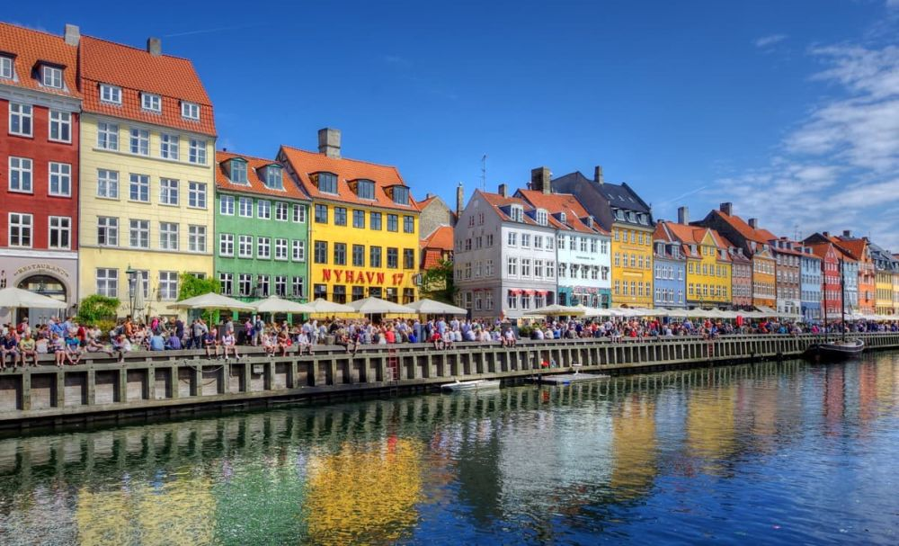

Descoperă Copenhaga - O călătorie în Danemarca
Copenhaga este capitala vibrantă a Danemarcei, oferind o varietate de atracții interesante pentru vizitatori:
-

Nyhavn în Copenhaga - Canale și culori
Explorează zona pitorească Nyhavn cu clădirile colorate, canalele și atmosfera animată.
-

Grădina de distracții Tivoli din Copenhaga - Distracție și divertisment
Vizitează una dintre cele mai vechi grădini de distracții din lume, cu atracții, restaurante și evenimente.
-

Mica Sirenă în Copenhaga - Iconică și simbolică
Vizitează faimoasa statuie a Micăi Sirene, simbolul orașului Copenhaga.
-

Castelul Rosenborg din Copenhaga - Istorie și regalitate
Explorarea acestui castel istoric și a grădinilor sale frumoase, care găzduiesc comori regale.
-

Palatul Christiansborg din Copenhaga - Centru politic
Vizitează acest palat impresionant, care servește ca sediu al Parlamentului danez.
Concluzii
Copenhaga oferă o experiență captivantă într-o capitală europeană modernă și istorică, cu o multitudine de atracții culturale și de divertisment.